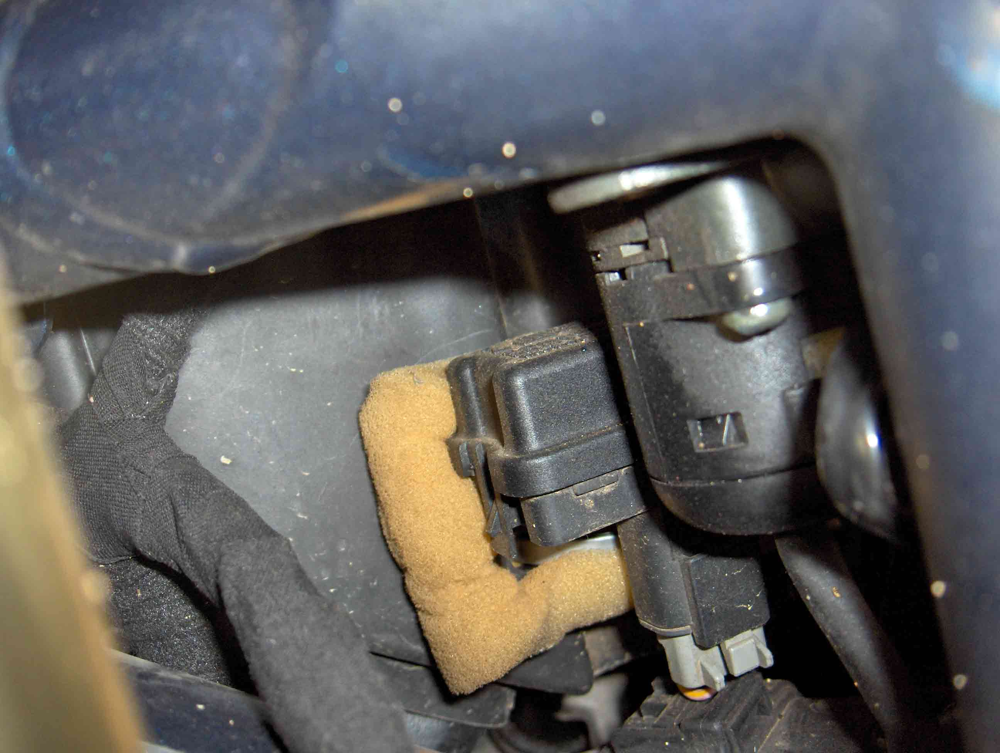
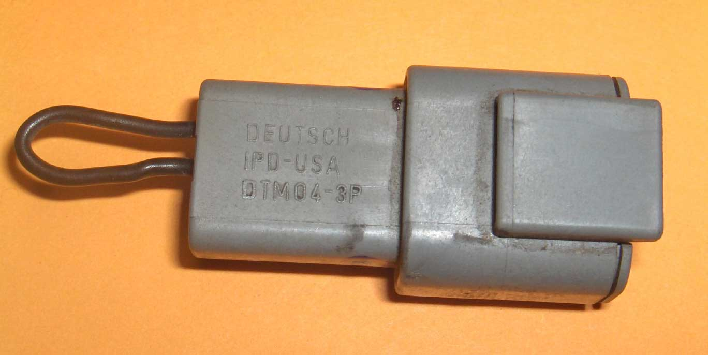

The tip-over switch, a mechanical contact, is normally screwed directly to the front of the airbox. When
the engine is making high revs, the vibration can cause the switch to trigger falsely. The ECU responds by
shutting the engine down. (This can also happen in the 900RS even though it uses a different TOS.)
The bike I demo'd did this to me, and I was amused to hear Gecko's explanation - fortunately for all of us,
they are no longer Benelli dealers.
The Japanese use a mercury switch, which doesn't suffer this problem. Benelli solved the problem by bypassing it! In fact my Tre arrived with this crazy mod! You really do need this little piece of safety gear, so check that it is in-circuit. Your engine will love you for it when it is lying on it's side one day, spooling down to zero. The alternative is - it's sitting on the rev-limiter, with no oil at the oil pump pickup. Your choice.
|
|
 |
| A cable tie (grey) replaces the screws. | Tip Over Switch on its sponge mount, from the right hand side. |
|  | |
| The tip over switch bypass plug. |
The connector is by Deutsch, part number DTM04-3P. Pins 2 & 3 are bridged.